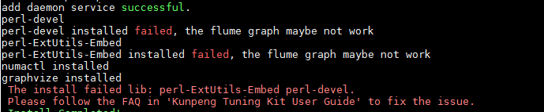

Symptom
During library file installation, a message indicating library file installation failure is displayed.
Possible Causes
The dependency library file does not match the OS version.
Procedure
- If the following types of library files fail to be installed, manually install library files that match the OS version and then reinstall the tool.
- glibc
- openssl
- libffi-devel
- If other types of library files fail to be installed, manually install library files that match the OS version and restart the tool. For details about how to restart the tool, see "Restarting the System Profiler".
The following steps use the perl-devel library file as an example.
- Check the installation failure message.

- Check the logs generated during the installation. The following is an example.

- The preceding information shows that libdb-5.3.21-25.e17.aarch64 has been installed on the current server, and perl-devel-5.16.3-294.el7_6.aarch64 is the file of the required version. Obtain and install the perl-devel-5.16.3-294.el7_6.aarch64.rpm file and restart the tool.